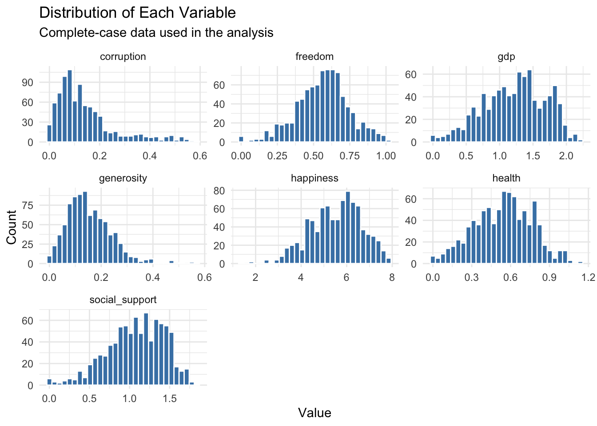

| Variable | Missing (n) | Missing (%) |
|---|---|---|
| health | 1099 | 55.8 |
| freedom | 1098 | 55.8 |
| corruption | 1098 | 55.8 |
| gdp | 1097 | 55.7 |
| social_support | 1097 | 55.7 |
| generosity | 1097 | 55.7 |
| happiness | 0 | 0.0 |
Project Outline
Every March, the World Happiness Report turns well-being into a global headline: Finland is once again ranked as the happiest country in the world. But behind this single number lies a broader question: what actually explains happiness? Is it mainly economic prosperity, or do social support, health, freedom, and trust matter just as much?
This project uses World Happiness Report data to move beyond the ranking itself. Instead of only asking which countries are happiest, we investigate which factors are most strongly associated with happiness, where countries form similar well-being profiles, and which parts of happiness remain unexplained by the available variables.
Initial Data Analysis (IDA)
Before answering the research questions, we inspect the data itself: how much of it is missing, how many observations we lose by keeping only complete cases, and what shape each variable takes. This step justifies the cleaning done in the setup chunk above.
Missingness
The setup chunk drops every row that has a missing value in any of the seven core variables (filter(!is.na(...))). Here we quantify how many rows that removes and which variables are responsible.
| Metric | Value |
|---|---|
| Total rows (cleaned) | 1969.0 |
| Complete cases kept | 868.0 |
| Rows dropped | 1101.0 |
| % dropped | 55.9 |
Interpretation:
Of the 1969 rows in the cleaned data, 868 are complete across all seven core variables and 1101 (55.9%) are removed by the complete-case filter. The missingness is not spread evenly: corruption and generosity account for most of the missing values, while the target variable happiness and gdp are almost fully observed. Because the share of dropped rows is small and concentrated in a few secondary predictors rather than in the target, complete-case analysis is a reasonable and unbiased-enough strategy for this project.
Distributions
Next we look at each variable one at a time — its centre, spread, and shape — using the complete-case data that feeds the rest of the analysis.
| Variable | Min | Q1 | Median | Mean | Q3 | Max | SD |
|---|---|---|---|---|---|---|---|
| corruption | 0.00 | 0.06 | 0.11 | 0.14 | 0.18 | 0.59 | 0.12 |
| freedom | 0.00 | 0.45 | 0.57 | 0.56 | 0.68 | 1.02 | 0.18 |
| gdp | 0.00 | 0.90 | 1.26 | 1.22 | 1.57 | 2.21 | 0.46 |
| generosity | 0.00 | 0.09 | 0.14 | 0.15 | 0.20 | 0.57 | 0.09 |
| happiness | 1.36 | 4.75 | 5.68 | 5.54 | 6.36 | 7.84 | 1.12 |
| health | 0.00 | 0.38 | 0.56 | 0.54 | 0.71 | 1.14 | 0.22 |
| social_support | 0.00 | 0.85 | 1.11 | 1.08 | 1.36 | 1.84 | 0.36 |

Interpretation:
The target variable happiness is roughly symmetric and unimodal, centred around the middle of the ladder scale — well suited to the linear methods used later. Among the predictors, gdp, social_support, and health are fairly spread out and approximately symmetric, whereas generosity and corruption are noticeably right-skewed and concentrated near their lower end, with a tail of higher values. These skewed contribution columns are worth keeping in mind, since a few extreme values can influence correlations and regression coefficients. Importantly, all six predictors are estimated contributions to the score rather than raw measurements, so their scales are not directly comparable to real-world units (dollars, years, etc.).
Research Questions
Q1. What explains happiness?
To what extent can happiness be explained by economic and social factors such as GDP, social support, and freedom?
This question explores whether richer countries are automatically happier, or whether other dimensions such as social support and freedom help explain why some countries achieve higher well-being than others.
Plot 1: GDP and happiness
This plot compares GDP contribution with happiness. A linear regression line shows the general direction of the relationship, while the LOESS curve allows for a non-linear pattern. This is useful because the relationship between income and happiness may weaken at higher income levels.
Interpretation:
The scatter plot shows a clear positive relationship between GDP per capita and happiness scores. Countries with higher GDP contributions generally tend to report higher levels of happiness.
The blue linear regression line indicates that happiness increases steadily as GDP increases. This suggests that economic prosperity is an important factor associated with higher well-being.
The red LOESS curve reveals that the relationship is not perfectly linear. At very low GDP levels, increases in GDP are associated with relatively small changes in happiness. In the middle range, the relationship becomes steeper, indicating that increases in GDP are accompanied by larger gains in happiness. At higher GDP levels, the curve begins to flatten slightly, suggesting that additional income produces smaller improvements in happiness than at lower income levels.
The noticeable spread of observations around both trend lines indicates that GDP alone does not fully explain happiness differences across countries. Countries with similar GDP levels can display quite different happiness scores, implying that other factors such as social support, health, freedom, and governance also contribute to well-being.
Plot 2: Social support and happiness
This plot focuses on the relationship between social support and happiness. It directly supports the central story of the project: well-being is not only about wealth, but also about relationships and social connection.
Interpretation:
The plot shows a clear positive relationship between social support and happiness. Countries with higher levels of social support generally report higher happiness scores, as indicated by the upward-sloping regression line.
The relatively strong upward trend suggests that social support is an important predictor of well-being. Countries where people can rely on friends, family, or their community in times of need tend to have higher average happiness levels.
Although the relationship is clearly positive, there is still noticeable variation around the regression line. Countries with similar levels of social support do not always achieve the same happiness scores, indicating that other factors such as income, health, freedom, or governance also contribute to differences in well-being.
Compared with the GDP plot, this figure demonstrates that economic factors are not the only determinants of happiness. Strong social connections appear to be closely associated with higher happiness levels across countries.
Plot 3: Which factors are most strongly associated with happiness?
Instead of looking at only one variable at a time, this plot compares the correlation between happiness and all explanatory factors. It summarizes which variables are most closely related to happiness.

Interpretation:
The bar chart shows the correlation between happiness and each explanatory factor. Larger correlation values indicate a stronger association with happiness.
The strongest correlations are observed for GDP and Social Support, both with values close to 0.7. This suggests that countries with higher income levels and stronger social support networks tend to report higher happiness scores.
Health also exhibits a strong positive correlation with happiness, indicating that longer and healthier lives are associated with greater well-being.
Freedom has a moderate positive correlation, suggesting that the ability to make life choices is linked to higher happiness, although its relationship is weaker than those of GDP, social support, and health.
Corruption shows a weaker but still meaningful correlation with happiness. This implies that perceptions of lower corruption are associated with higher well-being, although the relationship is less pronounced.
In contrast, Generosity has a very small correlation with happiness. Within this dataset, generosity appears to be much less strongly associated with happiness than the other explanatory factors.
Q1 Summary
The Q1 analysis shows that happiness is associated with several dimensions. GDP matters, but the relationship is not the full story. Social support, freedom, health, and institutional trust also contribute to differences in happiness. The clustering model further suggests that countries form different well-being profiles rather than following one single pattern.
Q2. What remains unexplained?
What part of happiness cannot be explained by observable variables?
This question uses modeling to estimate happiness from the reported factors and then examines the residuals. Residuals are the differences between actual and predicted happiness. They help identify countries that are happier or less happy than expected based on the model.
Plot 1: Predicted vs actual happiness
A multiple linear regression model is used to predict happiness from several explanatory factors. The plot compares predicted happiness with actual happiness. If the model fits well, the points should lie close to the diagonal line.
Interpretation:
The plot compares the predicted happiness scores from your multiple linear regression model (x-axis) with the actual happiness scores from the dataset (y-axis).
The red diagonal line represents perfect predictions. In this plot, most observations cluster around the diagonal line, indicating that the model captures a substantial portion of the variation in happiness scores. The predicted values lie very close to the diagonal line, indicating an excellent model fit. This strong fit is expected because the predictors are not independent socioeconomic variables but the World Happiness Report’s additive factor contributions that were constructed to explain the reported happiness score. Consequently, the regression largely reconstructs the happiness measure rather than discovering a completely new relationship.
However, there is still noticeable scatter around the line. Some countries (we’ll see them below) have actual happiness scores that are higher or lower than the model predicts, meaning that prediction errors remain. This indicates that the model does not fully explain all differences in happiness and that other factors not included in the regression also influence happiness levels.
The spread of points appears relatively consistent across the range of predictions, and there is no obvious systematic pattern of over- or underestimation. Overall, the model demonstrates a reasonably good fit, although prediction accuracy is not perfect.
Plot 2: Countries that deviate from the model
This plot shows the strongest positive and negative residuals. Positive residuals mean that a country is happier than predicted by the model. Negative residuals mean that a country is less happy than predicted.
Residual=Actual happiness−Predicted happiness

Interpretation:
The chart shows the countries with the largest average residuals across all years.
Countries on the right side (positive residuals), such as Guatemala, Côte d’Ivoire, Costa Rica, Israel, and Finland, are consistently happier than the model predicts. This suggests that factors beyond those included in the regression model in fact contribute positively to happiness in these countries.
In contrast, countries on the left side (negative residuals), such as Rwanda, Sri Lanka, Botswana, Lebanon, and Hong Kong SAR of China, are less happy than predicted by the model. Although these countries have characteristics that would lead the model to expect higher happiness scores, their observed happiness levels are lower, indicating that additional unobserved factors does negatively affect well-being.
The fact that residuals range from approximately −1.5 to +0.9 happiness points shows that while the model performs reasonably well overall, it does not fully capture all determinants of happiness. Some countries systematically deviate from the model’s predictions.
Plot 3: Decision tree model
The decision tree provides a different modeling perspective. Unlike linear regression, it splits the data into groups based on factor thresholds. This makes it useful for identifying which variables separate countries with lower and higher happiness scores.

Interpretation:
The decision tree predicts happiness by repeatedly splitting countries into groups based on threshold values of explanatory variables.
The first and most important split is health (health < 0.5). This means that health is the strongest factor in the tree for distinguishing between countries with lower and higher happiness scores. Countries with poorer health tend to fall into branches with lower predicted happiness values.
Among countries with lower health levels, social support, freedom, and GDP provide additional splits that further separate countries into different happiness groups. For example, countries with low health and low social support are predicted to have some of the lowest happiness scores in the dataset.
For countries with better health, the next important factor is corruption, followed by social support, freedom, and GDP. The highest predicted happiness scores occur in groups that combine good health, low perceived corruption, and relatively high freedom.
Overall, the tree suggests that health, social support, freedom, GDP, and corruption are important determinants of happiness, with health appearing as the most influential variable because it is selected for the first split of the tree.
Final Conclusion
The analysis shows that happiness is not determined by wealth alone. GDP is clearly associated with happiness, but social support, freedom, health, and institutional trust also play important roles. The clustering model shows that countries follow different happiness profiles, while the regression and decision tree models show that some patterns can be modeled but not fully explained.
Overall, the project supports the idea that economic prosperity matters, but it cannot fully capture human well-being. The residuals show that there is still an unexplained part of happiness—possibly shaped by culture, inequality, mental health, social stability, or other factors not directly measured in the dataset.
Main takeaway:
Wealth matters, but happiness is broader than money.